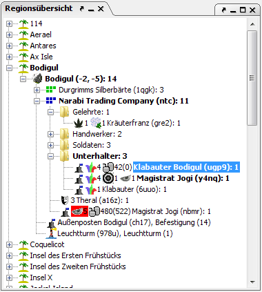

Im Regionsfenster werden alle Einheiten und Regionen in einer Baumstruktur dargestellt. Die Abfolge der Struktur ist die folgende (in absteigender Reihenfolge):

Knotenpunkte, unterhalb denen sich noch Einheiten mit unbestätigten Befehlen befinden, werden in Fettschrift dargestellt andere in normaler. Die Anzeige im Regionsfenster lässt sich in den Optionen in weiten Bereichen an den jeweiligen persönlichen Geschmack anpassen.
Einheiten haben ein Kontextmenue, das sich auf einen Rechtsklick hin öffnet. Dort hat man folgende Optionen:
Den Parteiknoten ist eine Allianzstatusanzeige vorangestellt, die die HELFE-Stati, die zu dieser Partei bestehen, anzeigt. Ein grünes Quadrat bedeutet dabei, daß der entsprechende HELFE-Modus gesetzt ist, ein rotes Quadrat bedeutet, daß er nicht gesetzt ist. Die Bedeutungen der Quadrate sind von links nach rechts: Silber, Kämpfe, Gib, Bewache, Parteitarnung. Die eigene Partei (bzw. die Partei auf deren Allianzen die Statusanzeige beruht) ist dabei blau dargestellt.